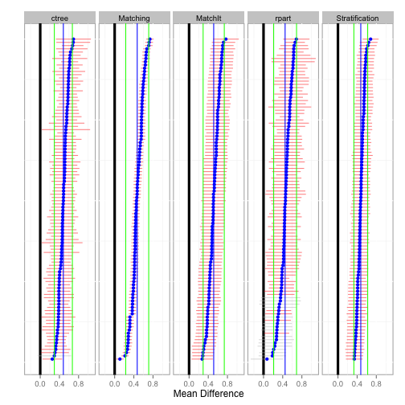

Jason Bryer
Home
Projects
Talks
Teaching
Blog
Blog
Order By
Default
Title
Date - Oldest
Date - Newest
ShinyQDA: R Package and Shiny Application for the Analysis of Qualitative Data
I will be giving a talk at ShinyConf 2025 on a Shiny application desiged for doing qualitative data analysis.
Mar 6, 2025
Sample size and statistical significance for chi-squared tests
In this post we are going to explore the relationship between sample size (
n
) and statistical significance for the chi-squared (
\(\chi^2\)
) test. Recall that from the normal…
Mar 4, 2025
Building a portfolio with Github and Quarto
Slides for a talk on how to build a portfolio website using Github
Feb 19, 2025
How many times do I need to take a test to randomly get all questions correct?
Darrin Rogers asked on Mastadon what are the “number of tries it would take, guessing randomly, to get 100% on a quiz if you had unlimited retries.” Here we will outline two…
Feb 6, 2025
login: User Authentication for Shiny Applications
The
login
package provides a framework for adding user authentication to Shiny applications. This is unique to other authentication frameworks such as ShinyManager and…
Apr 17, 2024
A Visual Introduction to Propensity Score Analysis
Recording of A Visual Introduction to Propensity Score Analysis given for the nyhackr meetup group.
Nov 14, 2023
Estimating Causality from Observational Data
The CUNY School of Professional Studies, Data Science and Information Systems department, is hosting a talk by Jason Bryer titled Estimating Causality from Observation Data. You can attend the talk in person at 119 West 31st Street, NY, New York, 10001 or watch the live stream. Please complete this form indicating your interest. Details on attending live or getting the Zoom link will be sent to the email address provided. Light refreshments will be provided for those attending in person.
Apr 24, 2023
R Package Development
Recording for an introduction to R package development.
Mar 1, 2022
Introduction to Shiny
Recording for an introduction to Shiny application development.
Nov 30, 2021
Map my run in R
First, I want to give a plug to the RStats Strava Running Club. If you are into running, it is a great group that provides lots of support.
Feb 15, 2021
Framework for Shiny Apps in R Packages
TL;DR:
You can test this approach using this Github Gist.
Feb 12, 2021
Editable DataTables for Shiny Applications
RStudio recently updated Shiny to allow for editable
DataTables
. Their implementations allows for editing cells direclty with in the
DataTable
view. This is fine for many…
Nov 26, 2018
Conducting Assessments and Surveys with Shiny
This post describes a framework for using Shiny for conducting, grading, and providing feedback for assessments. This framework supports any multiple choice format including…
Feb 22, 2016
Shiny App for Bayes Billiards Problem
Consider a pool table of length one. An 8-ball is thrown such that the likelihood of its stopping point is uniform across the entire table (i.e. the table is perfectly…
Feb 21, 2016
Data Caching
Data caching is not new. It is often necessary to save intermediate data files when the process of loading and/or manipulating data takes a considerable amount of time. This…
Jul 29, 2014
Women Graduates in Math, Statistics, and Computer Information Systems
One of the more interesting talks at this year’s useR! Conference was the heR Panel discussing the role of women in the R community. They estimate that fewer than 15% of…
Jul 4, 2014
useR 2014 Slides for PSAboot and version 1.1. on CRAN
PSAboot
is an R package to assist with bootstrapping propensity score methods. I gave a talk today at the useR! 2014 Conference. The slides can be downloaded from the…
Jul 3, 2014
str Implementation for Data Frames
The
str
function is perhaps the most useful function in R. It provides great information about the structure of some object. When I teach R, especially for those coming from…
Jun 5, 2014
Rgitbook Package for Using R Markdown with Gitbook
Last week I published an R script to interface with Gitbook. I received some positive feedback and decided to include all the code in an R package. This also allowed me to…
Apr 22, 2014
Albany, NY R Users Group
I have started an R Users Group for the Albany, NY area. Hopefully we get enough interest that we can host a meeting in the next couple of months. Please feel free to share…
Mar 20, 2014
Function to Simplify Loading and Installing Packages
One of the more tedious parts of working with R is maintaining my R library. To make my R scripts reproducible and sharable, I will install packages if they are not…
Feb 20, 2014

Bootstrapping for Propensity Score Analysis
I am happy to announce that version 1.0 of the
PSAboot
package has been released to CRAN. This package implements bootstrapping for propensity score analysis. This deviates…
Nov 26, 2013
Workshop and Talk Slides from NEAIR Conference
I am about to head home from my fifth time attending the North East Association for Institutional Research (NEAIR), this year in Newport, RI, which was just fantastic.…
Nov 12, 2013
Gambler’s Run with Shiny
I finally had an opportunity to play with Shiny, and I am very impressed. I have created a Github Project so head over there for the source code. There are a number of ways…
May 8, 2013
Cut Dates into Quarters
Frequently I need to recode a date column to quarters. For example, at Excelsior College we have continuous enrollment so we report new enrollments per quarter. To…
Apr 18, 2013
i Before e Except After c
When I went to school we were always taught the “i before e, except after c” rule for spelling. But how accurate is this rule? Kevin Marks tweeted today the following:
Mar 26, 2013
Converting a list to a data frame
There are many situations in R where you have a
list
of
vector
s that you need to convert to a
data.frame
. This question has been addressed over at StackOverflow and it turns…
Jan 30, 2013
Comparing two data frames with different number of rows
I posted a question over on StackOverflow on an efficient way of comparing two data frames with the same column structure, but with different rows. What I would like to end…
Jan 24, 2013
Version 1.0 of sqlutils available on CRAN
Version 1.0 of
sqlutils
has been released to CRAN. The
sqlutils
package is designed to manage a library of SQL files. This package grew out of the needs of an Office of…
Jan 15, 2013
Interactive SQL in R
I recently taught a very basic introduction to SQL workshop and needed a way to have participants interact with SQL statements. Obviously there are lots of tools to…
Jan 12, 2013
Reading Codebook Files in R
One issue I continuously encounter when starting to work with a new dataset is that of the codebook. In general, I prefer to load a codebook into R like any other data…
Jan 10, 2013
Function for Generating LaTeX Tables with Decimal Aligned Numbers
The
xtable
package is tremendously useful for generating LaTeX tables from data frames. It is also pretty easy to customize the output to handle some special cases of LaTeX…
Jan 4, 2013
Using (R) Markdown, Jekyll, & Github for a Website
Markdown has been growing in popularity for writing documents on the web. With the introduction of R Markdown (see also Jeromy Anglim’s post on getting started with R…
Dec 10, 2012
Fifty Shades of Grey in R
My wife went out to her book group tonight and their book of the month was
50 Shades of Grey
. Sadly, I could think of is that plotting 50 shades in R would be a neat exercise.
Nov 27, 2012
Visualizing Missing Data
There are several graphics available for visualizing missing data including the
VIM
package. However, I wanted a plot specifically for looking at the nature of missingness…
Nov 17, 2012
User Input using tcl/tk
I was inspired by Kay Cichini recent post on creating a a tcl/tk dialog box for users to enter variable values. I am going to have a use for this very soon so took some time…
Aug 13, 2012
Graphic Parameters (symbols, line types, and colors) for ggplot2
Following up on John Mount’s post on remembering symbol parameters in ggplot2, I decided to give it a try and included symbols, line types, and colors (based upon Earl…
Apr 27, 2012
Given a room with n people in it, what is the probability any two will have the same birthday?
Revisiting a fun puzzle I remember first encountering as an undergraduate. Nice example of creating a plot in R using ggplot2. I also plot the probability of someone in the…
Jan 31, 2012
Object Oriented Programming in R
As someone who was a Java programmer for many years learning R’s object oriented programming framework has been frustrating to say the least. I like the simplicity of S3 but…
Jan 20, 2012
Retrieving RSS Feeds Using Google Reader
I have been working on a new package makeR to help manage Sweave projects where you wish to create multiple versions of documents that are based on a single source. For…
Jan 13, 2012
Visualizing Likert Items
I have become quite a big fan of graphics that combine the features of traditional figures (e.g. bar charts, histograms, etc.) with tables. That is, the combination of…
Nov 11, 2011
No matching items